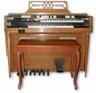

|
CLICK (gently!) on Granny's
|
 |
to close this page.
|
LOOK AT THE FOLLOWING CATEGORIES - THEY ARE HILARIOUS!
|
A. EVERGREEN BAPTIST HOME
B. ORGAN RECITALS C. FIVE FATEFUL WORDS D. WHERE IS THE CHAPLAIN'S WIFE? E. "NOTE" WORTHY F. SENIORS ARE CARRIERS OF "AIDS"? G. SENIORS ARE FRAGILE H. ABSOLUTELY, POSITIVELY, DEFINITELY NO BIRTHDAY PRESENTS! I. WE WILL WALK AGAIN! |


 |
The independent living section
of Evergreen Baptist Home |
From 1981 to 1985, Fred was Chaplain at Evergreen Baptist Home in White Rock, B.C. The home had a six-storey high-rise for those who were able to live independently, and then there was a care section for those who required more assistance. About 300 residents lived at the complex.
These were four wonderful years. Fred was sixty years old when he began his ministry there, and Viola was 56. These ages were considered "young" by the residents of Home. The Home boasts a beautiful chapel, and there is always a full-time chaplain on hand to minister to the residents. It was during Fred's ministry that a small musical ensemble joined with the pianist and organist to render a fifteen-minute prelude, plus special numbers. Viola played a Hawaiian steel guitar, and there was a violinist. The Pahls then retired on Vancouver Island, but years later when they returned to the mainland, they started to attend the services at Evergreen Baptist Home again. Now there are ten musicians in the orchestra (see write-up under "NOTE" WORTHY, farther down).
One item which caught people's attention was the fact that every day there were organ recitals at Evergreen Home. Wow! they reasoned, it must be wonderful to have organ recitals every day in the workplace. Please read about these "organ" recitals below.
Yes, indeed, not only once a day did Fred hear organ recitals - sometimes it was from early morning until late at night. What a lovely atmosphere to work in, you may exclaim - music all day long. Residents took turns, and each organ recital, though different, followed a similar theme. Fred listened patiently to these recitals, knowing that one day he, too, would be part of the "organ recital" gang. One resident recited the ordeals of heart attacks; another, the pain of kidney stones; and others suffered distress with liver or lungs. And on and on the organ recitals went! (Note: These recitals are not boring to a Chaplain. He is there to encourage and to pray with those who are going through tough times.)
They tackle life's problems, brave and bold.
Even when weak, in spirit they're strong,
Surviving setbacks with a smile and song.
a humorous reading or poem.
The following, entitled "Five Fateful Words," will make you chuckle.
Ladies and gentlemen, even though it is a beautiful day, I must share with you something which, alas, shows that we are living in dreadful times. Our country is facing a recession; many are out of work; these are hard times. Although I realized that things were bad, I didn't realize the seriousness of the situation until I saw a sign over a funeral home which had only five little words hung at their front door. Only five little words, you might say, but those five little words were loaded with horrifying portent. FIVE LITTLE WORDS, mind you - a simple, imperative sentence, with an elliptical subject, a compound predicate in the active voice, one tiny little adverb, and two correlative conjunctions. It read…
Well before I tell you, let me say that I have always considered funeral homes to be the epitome of dignity. Here, if no other place in the world, you should be able to find sympathy, consolation, quietly hushed voices, muted understanding. But now it gives me great inner pain to report that the funeral parlour, once dignified, decent, decorous, deferential, demure, discreet, has now been denuded of decency. It has become decadent, despicable, disgraceful, and distasteful.
Ladies and gentlemen, I even hesitate to tell you what I read on the sign in the funeral parlour. Should I burden your delicate ears and sensitive minds with such trite? Well, it is only because you coax me with your eager expressions of questioning looks that I will tell you. But before I tell you, let me say, that when a funeral parlour has to erect such a sign on its premises, the world is really falling apart, and the recession is of such profound magnitude that we, as thinking citizens, must apply ourselves to the desperate problems which beset our society.
The sign read... oh dear... should I really tell you? Again, your facial expressions all but shout at me: HURRY UP - YOU FOOL - TELL US WHAT THE SIGN SAID!
Listen carefully, for I shall say it but once. I cannot bring myself to repeat the horrendous words. These five little words - these five explosive words are:
And I tell you, ladies and gentlemen, it is a shocking shame when we don't have the finances to die any more because of the recession. It appears to me that many of us do not have fat bank accounts, and many of us still have a lot of debts to cover. Let's face it - we are going to have to live another hundred years before we can save up enough money to die!
(now deceased) worked with zeal and enthusiasm on behalf of the Home.
He was loved and respected by everyone.
In the following, we bring out his good traits in a subtle sort of way.
We have a remarkable Administrator in this Home - Rev. Rudy Rapske. Although it will take me awhile to prove to you what a terrific Administrator we have, please bear with me and have patience. I will get there.
One day, one of the girls who works at the front reception desk was very ill, so a substitute was hired for the afternoon. She did her very best: answered the telephone politely, directed people to the various care sections, and so on. Of course, being new, she did not know the names of the staff members.
Well, on this particular day, Rev. Pahl was up town and had an urgent message to convey to his wife. Mrs. Pahl was in the hi-rise lounge attending a program with nearly 150 in attendance. When Fred called Evergreen, he just said:
"This is the Chaplain calling. I'd like to speak to my
wife. It's very urgent. She's at a meeting in the hi-rise lounge." He didn't
realize there was a temporary staff replacement.
"How will I know which one is your wife?" said the new receptionist. "I don't want to disturb the meeting.
"Easy," replied the Chaplain. "She has grey hair."
"How will I know which one is your wife?" said the new receptionist. "I don't want to disturb the meeting.
"Easy," replied the Chaplain. "She has grey hair."
So the little receptionist tripped down to the hi-rise lounge. She took one look and came back to the telephone.
"I'm sorry, sir; everyone there has grey or white hair. I
can't pick her out."
"Oh, true, true. She's the one with grey hair and wobbly legs."
"Oh, true, true. She's the one with grey hair and wobbly legs."
Again, the receptionist went to the lounge and after taking a quick look, she came back to the phone.
"Sir, all I can see down there are walkers, canes,
crutches. There must be a lot of ladies with wobbly legs."
"Hmmm - let's see. She's wearing a real pretty dress."
"Hmmm - let's see. She's wearing a real pretty dress."
Again, a trip down the hall. The receptionist took a good, careful look at the audience and reported,
"Sir, nearly everyone there is wearing a pretty
dress."
Now, Rev. Pahl is very proud of the residents at Evergreen. In fact, if I may digress for a moment, I must say that all of you look so lovely and dress so beautifully that you are a pleasure to look at. Anyhow, to get back to the story.
"NEARLY everyone is wearing a pretty dress?… I'll
have you know, young lady, that EVERYONE at Evergreen wears a pretty
dress."
"No, sir, some were not wearing a pretty dress."
"Well, young lady, you'd better get your eyes checked out."
"Please, sir - Mr. Roberts - Mr. Todd - Mr. Rauser - they were all wearing pantsuits."
"No, sir, some were not wearing a pretty dress."
"Well, young lady, you'd better get your eyes checked out."
"Please, sir - Mr. Roberts - Mr. Todd - Mr. Rauser - they were all wearing pantsuits."
There was a dead silence at the other end of the line, and then a muffled apology.
"Try this - just ask them, 'Will the one who loves the
Chaplain please put up her hand.'"
Obediently the receptionist took advantage of a brief interlude in the program and asked the question. Well, ladies and gentlemen, you might find this hard to believe, but at least a hundred hands went up! Back to the telephone went the faithful worker.
"I've just thought of a sure-fire method to get my wife's
attention," said the parson. "As you know, she teaches Business English. Just
ask who can explain what a dangling modifier is, a verb in the subjunctive
mood, a relative clause, and whether or not you use a nominative or objective
case pronoun after the infinitive 'to be.'"
Down the hallway the patient receptionist went - hoping by now it would be the last time - but when she got to the lounge, she couldn't remember anything about the subjunctive mood, dangling modifiers, or nominative or objective case pronouns. So she announced:
"Will the one who knows English put up her hand."
This time, every hand in the place went up - even the German folk raised their hands because they didn't want to miss out on anything. Well, that was the final straw. The defeated receptionist went into the hallway and started to cry.
Just then, Rev. Rapske, our Administrator, came by. Well, we all know what the Rev. Jesse Jackson said: "Both tears and sweat are wet and salty, but they render a different result. Tears will get you sympathy, but sweat will get you progress." And so the salty tears of the young lady stirred the sympathy of our kind-hearted Administrator.
"Can I help you?" he asked. "Here, cry on my
shoulder."
However, because the lady was six feet tall, she didn't accept the invitation from the much shorter Administrator. But she did sob out her story about all the trouble she had been having.
"Do you know the Chaplain's name?" asked Rev. Rapske.
"No, I don't," confessed the receptionist. "He just said he was the Chaplain."
"Well, his name is Fred Pahl, and his wife's name is Viola Pahl. I'll just go into the meeting and call out her name, and I think your problem will be solved."
"No, I don't," confessed the receptionist. "He just said he was the Chaplain."
"Well, his name is Fred Pahl, and his wife's name is Viola Pahl. I'll just go into the meeting and call out her name, and I think your problem will be solved."
So the Administrator did just that, and you know what? It worked. The young receptionist was amazed.
"Why didn't I think of that?" she said. "Oh, the
Administrator is so intelligent. He knows how to solve everything."
All day long the substitute receptionist talked about the brilliance of the Administrator, which, as you might guess, completely bored everybody.
Because all of us have known for a long, long time that we have a wonderful Administrator.
PUBLISHED IN THE "NOW" NEWSPAPER, 2003
REGARDING THE ORCHESTRA AT
EVERGREEN BAPTIST CHAPEL, WHITE ROCK, BC CANADA

The happy seniors who make up the musical ensemble at White Rock's Evergreen Home are part of the six million Canadians who sing and play hymns every weekend, believing it connects them with others, expresses their deepest thoughts and emotions, and helps them experience God's love. I experienced this myself last Sunday when I entered the Evergreen chapel to the strains of For the Beauty of the Earth," and I was reminded, while I joined others in praise, of the awakening world around me, bathed in spring blossoms, all part of God's handiwork.
The ensemble, consists of two accordionists, two mandolin players, three melodica players, an organist, pianist, violinist, and a steel guitarist. "The thinking process of music provides you with a certain discipline," claims accordionist, 71-year-old Bill Wentland from Poland, the ensemble's youngest member. (The oldest player is ninety.) Bill continues, "You don't want to give it up. If you do, it's a recipe for an early death. You'll have nothing to do." Most of the ensemble members, with strong European roots, learned to play hymns as children. They were taught a variety of instruments, including violins, mandolins, guitars, and brass at their churches during their school years, creating in them a love of hymn-playing.
Audrey and her husband, 89-year-old Jonas Hagglov from Winnipeg, both of European background, play a melodica and a violin respectively. Accordionist Henry Allinger has made up five theme-oriented music books for the ensemble's use. He escaped to Germany from Austria before emigrating to Canada in 1953. Henry claims that hymns are a wonderful companion. "When I am anguished or worried, I simply pick up my accordion and play and play," he says. Polish mandolin players and school sweethearts, Irene and Eric Zimmerman, believe "playing an instrument keeps your fingers from becoming stiff." Eric further states, "Think young. Don't accept the notion you are getting old. Making music keeps you young."
And seeing the "young" attitudes of each of the musicians, their love for hymn-playing, and the sheer joy they receive from participating, I believe they have a prescription for longevity which shouldn't be minimized.
Viola Pahl, Hawaiian steel guitarist, polio survivor, author and wife of a retired minister (who also served four years as chaplain at Evergreen), loves to play the older style hymns because they sound great on the steel guitar.
|  |
A Double-Necked Hawaiian Steel Guitar
|
Bifocals fit me splendidly; But I sometimes miss my brain!
|

The seniors were fantastic people to be with day by day.
We truly loved them.
At our farewell in 1985, we wrote the following tribute to them.
Now that we are seniors, we are with an age group
which is sympathetic, empathic, caring, and praying.
The residents at Evergreen Baptist Home are special. Some of you made a decision to sell home and furnishings, bring along your unique treasures, and set up a mini-home for the closing years of life. Others have come to Evergreen, not by particular choice, but because the unwelcome guests of physical infirmities have chosen you, and you need the care that such a place as Evergreen offers.
I like this place - not because of the evidence of pain and suffering, but because it is, in a certain sense, an oasis of sanity from the hustling and bustling ways of the outside world. No-one is running around trying to meet schedules, looking for jobs, making meals, raising kids. The slow pace is a welcome change from the turbulent traffic and troubles of a noisy world.
Many of you have asked me, "How are you today?" And I have replied, "Not so bad for an old hen." I can hear your happy chuckle, "If YOU are an old hen, then what do you think WE are?" Although I am not as old in chronological age as you, you must remember that for 37 years I have been dragging around a body that has been physically handicapped, and as far as my body goes, I have been an "old hen" for a long, long time. Probably that is why I have felt so attuned to many of you at Evergreen. We silently understood each other. We know how hard it is to get to a standing position from a sitting position; we know how wobbly our legs feel at times; we know how hard and uncomfortable certain kinds of chairs are; we know what it is like to be unable to do things for ourselves. We are at the mercy of others who may or may not want to help us in the way we wish. We cannot run up town, go for a hike, or jump in the car and drive to the beach to gaze at a beautiful sunset. These possibilities happen only if others take us. And no matter how good our families are to us, we sometimes feel that we are a burden.
we handle you with prayer.
When I look at you, I think of gorgeously-crafted crystal stemware and vases. Like these artifacts, you have been arranged on a shelf in a very special place. Not because you are useless, but because you are fragile and beautiful. Etched on the crystal are intricate and beautiful designs - each piece is different. And you, too, are fashioned with your own unique pattern. Father Time and God our Father have worked over the decades to artfully produce a lovely you - gleaming, bright, transparent. Like exquisite, fragile stemware you are gentle, delicate people. You are so easily shattered when life-threatening illnesses attack. Because you are precious, we handle you with care - we handle you with prayer.
I have loved and admired you for your inner strengths which help you to bear pain, suffering, disadvantages, misunderstanding, and frustrations. You have taught me so much, and I thank you for it. If I can be like you in later life, I can face the years ahead with confidence instead of fear.
Well, you might say, not all the people at Evergreen are well-adjusted, happy individuals. Let us remember that maybe their burdens throughout life have been more than even we could have borne. Let us be their friends, not their critics.
Thank you for reaching out to me with your gracious words, smiles, and charming personalities. You have been like older sisters to me. I will miss the community spirit that there is at Evergreen - one will not find it to the same degree in the outside world. And for those of the household of faith - the family of God - let us continue to pray one for the other.
Above all, do not give up. There are your younger families who see you. There is the staff who see you. There are a lot of volunteers and visitors to the Home who see you. While I would in no way suggest that we paint a "false" picture of old age - there are a few drawbacks no matter what the experts say. I would assert that how we cope with our problems and how we live before the other residents and visitors will have a profound influence on their thinking of old age. We can do our part to show them that older age, even with its limitations, can be a time of inner happiness, joy, and zestful living in spite of pain, setbacks, and loneliness. You have touched me profoundly with your courage. Please, please keep up the good work. Trust in the Lord with all your hearts. Draw near to Him, and sit back in quiet peace and rest and enjoy the goodness of God until He takes you home to be with Himself.
I will be your God through all your lifetime,
yes, even when your hair is white with age.
I made you, and I will care for you.
I will carry you along and be your Saviour.
NO BIRTHDAY PRESENTS!
One of the fringe benefits of having a daughter who teaches English as a Second Language is meeting many of Susan's students and their friends. Fulvia, a senior lady, comes from Italian ancestry and was raised in Brazil. What a lady! Her combination of Italian and South American warmth and friendliness captivate everyone. Hugs are in order - as well, a kiss on the cheek. And when Fulvia tells a story, the use of her hands makes the arration come alive! Well, when Fulvia had a special birthday party, she sent out the following letter BEFORE the event. It is a classic, and we share it with you.
As all of you know, I had a very hard year fighting cancer. Because of this I didn't have an 80th birthday party last year. Actually, on that very day I went to the Cancer Clinic for my first appointment and the battle started! Three Chemo, 20 radiation sessions, side effects and so on. Therefore I would like to have a get-together to thank God for my life, because the lymphoma is "dead"(I hope so!), and for the support all of you gave to me with your prayers, love, and care.
NO GIFTS NO CARDS NO FLOWERS
Let's face it! I live in a studio. I have dozens and dozens of kitchen stuff, clothing, purses and wallets, paraphernalia, "over flowing" drawers, shelves, and closets. Some of these items have never been used! Creams, body lotion, bath salts - enough to last me until my 100th birthday.
As far as cards are concerned, if there are 50 guests and each one buys a card with the of the cheapest one $3.00, we are looking at $150.00 that will be thrown away sooner or later. By the way, if you know what to do with used cards, please let me know. I have boxes full of them.
About flowers. When I was talking with a granddaughter about this birthday party, she said, "But Vó (Granny) I think your friends would like to give you at least, a little thing." O.K. You don't have to, but if you really want, I "allow" you to bring one (O-N-E) flower per family, not per capita. From your own garden would be great!
Instead of spending money with an expensive gift (like those I have received all these years), I ask you to put the amount in a blank envelope to be dropped in the box on the table at the reception entrance.
The money will be divided between the B.C. Cancer Foundation represented by Mrs. Sharon Kennedy, Director, Development, Vancouver Region, and Union Gospel Mission represented by Mr.Doug Peat, Corporate Relations Coordinator. There will be a big card for you to sign your name; then when I get old (good joke, huh?) and sitting down in a rocking chair, I will read all the names and remember each one of you who helped these two wonderful organizations.
in order not to give trouble to the Fire Department!

WHEN WE GET TO HEAVEN, WE WILL NOT NEED
WHEELCHAIRS, CANES, CRUTCHES, ETC.SO WE WILL LEAVE THEM AT THE GATE, AND BE FREE FOREVERMORE.
THERE WILL BE…
TEARS, DEATH, SORROW, PAIN, SIN, HUNGER, THIRST


WHEELCHAIRS WALKERS SCOOTERS BRACES

|
CLICK (gently!) on Granny's
|
|
to close this page.
|